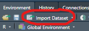

Chapter 5 Working with existing Data
Please also install the wobblynameR package (only available on GitHub). For that you need the devtools package first:
install.packages("devtools")devtools::install_github("the-tave/wobblynameR")
5.1 First Steps: Seminar Data
- Download the data frame from ILIAS and save it in the data subfolder in your R-Project.
- Use the "Import Dataset" Menu under the Environment tab 
- In that menu, we can select our data file & choose some basic aspects of reading in that data
Make sure you have the right package installed for reading in specific data types! Here: Please install the readr package with install.packages("readr")
In my experience, it is easiest to work with data where you have an idea of what to expect.
5.2 Different types of data sources
Data collected from WEXTOR - like from many other sources - will be exported in the CSV format, which stands for comma-separated values. That means that this type of data has one row per participant and the values for each column (variable) are separated by a delimiter 3.
When our data comes from an Excel file, it will often be exported as CSV because this type of storing data is pretty efficient and uses up very little space on the disk. A more modern but also more space-consuming way of storing Excel table data is in the XLSX format (Not an acronym, just stands for "Excel Spreadsheet").
Many people use SPSS for statistical analysis and creating dataframes. These data will be stored in a file with the extension SAV. Generally speaking, SAV files are compatible with R. However, there are some specialties which can cause problems, such as SPSS labels. We won't go into depth on this, just know that R can sometimes recognize SPSS labelled variables as their own class, in which case the class of those variables should be corrected manually 4.
Finally, of course we can also encounter datafiles that were created in R.
In this case the will have .Rds as the file extension.
A special case of this is when data frames are included in base-R or in a package.
For example, the dataset called iris comes with R as an example dataset.
Therefore, we can run a function on it without having to load it at all:
head(iris)
# Sepal.Length Sepal.Width Petal.Length Petal.Width Species
# 1 5.1 3.5 1.4 0.2 setosa
# 2 4.9 3.0 1.4 0.2 setosa
# 3 4.7 3.2 1.3 0.2 setosa
# 4 4.6 3.1 1.5 0.2 setosa
# 5 5.0 3.6 1.4 0.2 setosa
# 6 5.4 3.9 1.7 0.4 setosaDepending on which type of data we want to work with, there are different ways of loading the data into R.
5.3 Reading in the data
There are two main ways to load data: via the "Import Dataset" menu under the Environment-tab or (only) using code and if necessary packages. In the menu, simply select the option "Import Dataset" menu under the top-right Environment-tab and use From text (readr) for csv or other text files (such as .txt). Note that this menu also offers the possibility to load data from Excel and SPSS. However, this is much easier done by just using simple commands directly in your script:
| Data Source | R command |
|---|---|
| WEXTOR (CSV) | readr::read_delim("data.csv", delim = ";") |
| Excel (XLSX) | xlsx::read.xlsx("data.xlsx", sheetIndex = 1) |
| R Data Source (RDS) | readRDS("data.Rds") |
| SPSS (SAV) | foreign::read.spss("data.sav") |
5.3.2 Basic Edits
- Choose an appropriate name, e.g.
raw - Put all library commands at the top of the script so you are ready to conduct all analyses
- You do not need the View() command in your script
- If you are not sure about the state of your data, look at it first!
- View() opens the whole data in new tab; glimpse(), str() and head() give you a rough overview; names() shows you all variable names
- Some edits are already possible in the menu! Column types can (and sometimes should) be adjusted, e.g. recognizing dates
- Create a new dataset as a copy in which you do all further edits! E.g.
seminarwith proper varname prefix
5.3.3 Basic Edits
5.3.3.1 Result
library(readr)
library(wobblynameR)
raw <- read_delim("./data/seminar_data_raw.csv",
delim = ",", escape_double = FALSE,
col_types = cols(.wx.5.start_date = col_date(format = "%m/%d/%y"),
.wx.7.end_date = col_date(format = "%m/%d/%y"),
...24 = col_skip()),
trim_ws = TRUE)
# Add "v" as varname prefix to all variables
seminar <- namepref0(raw, "v")5.4 Working with the data:
Codebook
- What variables are in the data? ->
names(seminar)- v.wx.1.id, v.wx.4.start_time, v.wx.5.start_date, v.wx.6.end_time, v.wx.7.end_date, v.wx.8.session_length, v01_gender, v02_age, v03_prog_exp, v04_bodyheight, v05_skill_tech, v06_loc, v07_genre, v08_loudness, v09_smoke, v10_motivation, v11_soul, v12_soul_phil, vrt_1, vrt_2, vrt_3, vz0_browser_screen_h, vz0_browser_screen_w
- What can they tell us? Which analyses might be of interest?
5.5 Working with the data:
Descriptives
- In any report, we need to give our readers/ listeners/... an overview of the data
- We need to know the sample to judge the results!
- A sample of e.g. 10 female psychology students probably shows different results -generally speaking - than a sample of 10 male soldiers
Name some common descriptives:
- Mean
- Median
- Mode
- Variability, Variance, Standard Deviation
- Data Visualization...
5.5.1 group_by & summarize
- With the dplyr-workflow, we can easily output group statistics
- Keywords: group_by() & summarize()
- The code is built like any other dplyr workflow with pipes ( %>% ) in between each:
- Define/ name the data frame
- group_by(variable_name)
- in summarize, define a name for the statistic, use a =, use a function like mean() for the measure
iris %>%
group_by(Species) %>%
summarize(m_plength = mean(Petal.Length),
med_pwidth = median(Petal.Width),
m_slength = mean(Sepal.Length),
mode_swidth = getmode(Sepal.Width),
n = n())
# # A tibble: 3 × 6
# Species m_plength med_pwidth m_slength mode_swidth n
# <fct> <dbl> <dbl> <dbl> <dbl> <int>
# 1 setosa 1.46 0.2 5.01 3.4 50
# 2 versicolor 4.26 1.3 5.94 3 50
# 3 virginica 5.55 2 6.59 3 505.6 Exercises
5.6.1 group_by & summarize
Follow the structure to group the edited seminar data by belief in the soul and output a summary with
- mean age
- mean technological skill
- mode music genre
- median volume of music
- grouped n (function n())
seminar %>%
group_by(v11_soul) %>%
summarize(m_age = mean(v02_age),
m_tech_skill = mean(v05_skill_tech),
mode_music = getmode(v07_genre),
median_volume = median(v08_loudness),
n = n())
# # A tibble: 3 × 6
# v11_soul m_age m_tech_skill mode_music median_volume n
# <chr> <dbl> <dbl> <chr> <dbl> <int>
# 1 dunno 23.4 29.4 techno 89 5
# 2 no 22 45 pop 74.5 2
# 3 yes 22.5 42 rock 67.5 65.6.2 Prepare seminar data
We have read in the "seminar_data_raw" and looked at some of the basic edits that we can do easily. However, in order to be able to work with the dataset in easily in the future, we should do some more advanced edits. Specifically, we will:
- Change the date format so we get a start and end variable including time and date instead of separate date and time variables
- Remove the unnecessary original date and time variables
- Change the one missing value in
v12_soul_philto "dunno" - Rename the ID variable to
ID& session length variable tosession_length - Make our data type explicit using
as.data.frame() - Save our edited data in an R data set (
Rds) format so we can use it more easily later!
I suggest using some of the dplyr commands that were introduced in the last chapter for edits 1 through 4.
You can try to figure them out on your own and later look at the solution below.
I highly recommend you follow along with these steps, as we will use this dataset in later chapters5
seminar <- seminar |>
# 1. Change date format
mutate(start = as.POSIXct(paste(v.wx.5.start_date, v.wx.4.start_time), format = "%Y-%m-%d %H:%M:%S"),
end = as.POSIXct(paste(v.wx.7.end_date, v.wx.6.end_time), format = "%Y-%m-%d %H:%M:%S"),
.before = v01_gender) %>% # it is more efficient to have date and time together
# 2. Remove (now) unnecessary original date vars
select(-c(v.wx.4.start_time, v.wx.5.start_date, v.wx.6.end_time, v.wx.7.end_date)) %>%
# 3. Change missing value to "don't know" - in this case makes sense in context
mutate(v12_soul_phil = ifelse(is.na(v12_soul_phil), "dunno", v12_soul_phil)) |>
# 4. Rename the ID & session length variable
rename(ID = v.wx.1.id,
session_length = v.wx.8.session_length)
# 5. Make data type explicit
seminar <- as.data.frame(seminar)
# 6. Save edited data frame in Rds format
saveRDS(seminar, "./data/seminar_data.Rds")Wrap-Up & Further Resources
- Reading in data works with commands like readRDS() but also the "Import Dataset" Menu
- Use the menu for WEXTOR data to get an overview and reproducible code
- Get/ create a codebook for your data
- Always report descriptive data
-
dplyr's
group_by()andsummarize()can output grouped descriptives